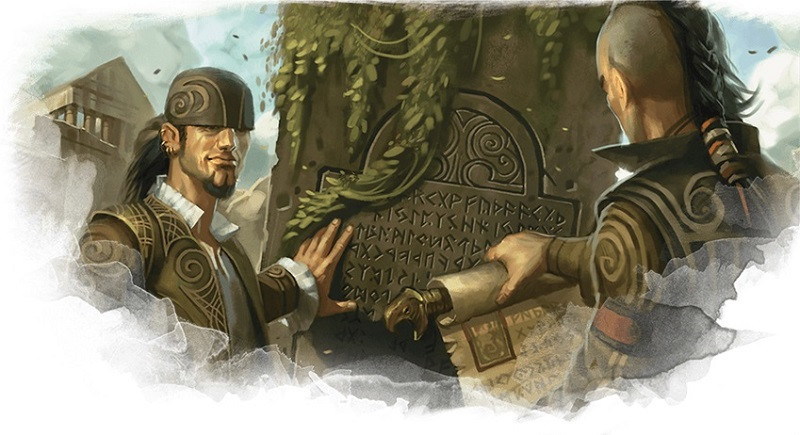

Collège du savoir
Vous êtes un barde du collège du savoir. Votre esprit vif coupe plus durement qu'une lame et vos oreilles ne manquent jamais d'attraper les dernières rumeurs. Vous êtes peut-être un érudit qui étudie des nuits entières dans des bibliothèques remplies de livres anciens, ou le bouffon d'une cour toujours à l’affût des derniers potins et prêt à embrocher les courtisans avec une répartie acerbe. Mais que votre barde soit un sage instruit, une commère téméraire ou un explorateur à la Indiana Jones, votre connaissance vous aidera lors de vos nombreuses aventures.
Si le Charisme est bien votre caractéristique principale, utilisez les autres caractéristiques pour forger votre personnalité. Un barde du collège du savoir doté d'une Intelligence élevée pourrait être plus enclin à des études universitaires, alors qu'un barde doté d'une Sagesse élevée pourrait être plus urbain, avec un penchant pour la ruse.
Mais peu importe l'histoire de votre barde du collège du savoir, voici quelques précisions sur le fonctionnement de cette sous-classe à connaitre avant de vous engager à la jouer. Et n'oubliez pas que les bardes choisissent leur collège au niveau 3, vous avez donc le temps de bien maîtriser votre personnage avant de choisir sa sous-classe !
Capacités du collège du savoir
Le collège du savoir est la sous-classe de barde la plus emblématique, représentant de nombreuses interprétations thématiques du barde et englobant des types de personnages aussi divers que le conteur du village ou l'artiste voyageur flamboyant. La classe de barde est déjà bien adaptée pour être un touche-à-tout, et rejoindre le collège du savoir ne fera qu'élargir l'éventail de connaissances et de talents parmi lesquels vous pouvez choisir. Le barde gagne trois capacités de sous-classe aux niveaux 3, 6 et 14. En résumé, ces capacités de sous-classe permettent :
- D'acquérir la maîtrise de compétences de votre choix.
- De distraire vos ennemis avec vos mots, ce qui affaiblira l'impact de leurs attaques.
- De gagner des sorts issus de la liste de sorts d'autres classes.
- D'utiliser votre Inspiration bardique pour améliorer vos jets de caractéristique.
Avantages du collège du savoir
Rejoindre le collège du savoir transforme le barde, déjà polyvalent, en un factotum [homme à tout faire] sans égal, ce qui vous permet d’avoir un outil utile dans presque toutes les situations. Au niveau 6, Secrets magiques supplémentaires vous permet d'accéder aux listes de sorts des autres classes, en plus des secrets magiques que tous les bardes gagnent au niveau 10, et ainsi de personnaliser votre barde de façon presque illimitée. Si vous avez besoin d'un plus en combat, apprendre le sort de paladin châtiment courroucé pourrait être le bon choix. Si vous utilisez la magie noire, le sort d'occultiste maléfice sera peut-être plus approprié.
La capacité Mots cinglants améliore également la polyvalence de votre Inspiration bardique, vous permettant d'utiliser Inspiration bardique de manière réactive et proactive. Notez toutefois que cette capacité n'a aucun effet sur les créatures immunisées contre les charmes.
Inconvénients du collège du savoir
Tout d'abord, la plus grande force du collège du savoir - sa polyvalence - peut aussi être sa plus grande faiblesse. Si vous êtes un joueur qui n'aime pas devoir faire des choix ou si devoir choisir des sorts à chaque niveau vous ennuie, cette sous-classe n'est pas pour vous. De même, si vous voulez être un combattant égoïste et autosuffisant, sachez que la classe de barde est en grande partie orientée pour aider l'ensemble du groupe, plutôt que de vous faire vivre de grands moments. Le collège du savoir atténue un peu ce problème avec la capacité Compétence hors pair au niveau 14 qui vous permet d'utiliser votre Inspiration bardique pour vos propres jets de caractéristique et au fait que vous pouvez utiliser des Secrets magiques supplémentaires pour obtenir des sorts plus « égoïstes », mais cela ne suffira surement pas pour faire du barde un combattant totalement autonome.
Exemple de personnage
Si vous construisez un barde du collège du savoir à partir du niveau 1, vous devez choisir une race qui vous octroie un bonus en Charisme, comme le tieffelin ou le demi-elfe. Une race complète comme l'humain peut vous aider à consolider vos attaques et votre défense physiques qui ne sont pas terribles, mais en tant que barde du collège du savoir, vos sorts devraient votre première priorité. C'est donc pour cela que le Charisme devrait être votre meilleure caractéristique et la Dextérité ou la Sagesse en second, selon que vous souhaitiez être habile avec des armes (Dextérité) ou Perspicace (Sagesse).
Comme d'habitude, le background de votre personnage dépend de vous. Vous pouvez jouer sur le thème du spectacle en sélectionnant l'historique d'artiste ou de charlatan, ou sur le thème de l'universitaire en choisissant l'historique du sage. Vous pouvez également choisir un thème inhabituel avec l'historique de soldat ou d'enfant des rues et utiliser ce contraste pour raconter une histoire surprenante et intéressante.
Le choix de l'équipement n'est pas très important pour vous, car vous allez compter beaucoup sur vos sorts. Choisissez la meilleure armure que vous puissiez porter et une arme de finesse comme une épée courte ou une rapière. Bien entendu, le type d'instrument de musique que vous choisissez dépend entièrement de vos préférences.
Sorts
Lorsque vous choisissez vos sorts au niveau 1, vous définirez le rôle que votre barde jouera au sein du groupe. Heureusement, le collège du savoir est d'une flexibilité incroyable, ce qui vous donnera le temps nécessaire pour déterminer quels sorts vous sont les plus utiles. Contrairement à d'autres classes de lanceur de sorts, une fois qu'un barde apprend un sort, il le connaît pour toujours. Et vous apprenez un nouveau sort de barde chaque fois que vous montez de niveau (plus ou moins). Et vous pouvez « échanger » un sort connu contre un autre de votre liste de sorts lorsque vous gagnez un niveau. Et cela ne tient pas compte des quatre sorts qu'un barde du collège du savoir gagnera grâce à ses Secrets magiques. C'est en fait une tonne de sorts, alors ne vous inquiétez pas trop pour votre décision.
Choisissez les deux sorts mineurs qui vous plaisent (l'un d'entre eux devrait toutefois être moquerie cruelle car il est très emblématique) et quatre sorts de niveau 1 parmi ceux proposés dans la liste ci-dessous. Essayez de choisir un sort de soutien, un sort défensif, un sort social et le dernier selon vos préférences. Cette liste n'est toutefois là que pour vous aider à démarrer si vous jouez un barde du collège du savoir pour la première fois. Avec l'expérience, vous pouvez bien entendu choisir parmi d'autres sorts.
- Fléau (défensif)
- Charme-personne (social)
- Soins (soutien)
- Détection de la magie (soutien)
- Déguisement (social)
- Murmures dissonants (offensif)
- Lueurs féeriques (soutien)
- Fou rire de Tasha (défensif)
- Image silencieuse (social)
- Vague tonnante (offensif)
Aux niveaux supérieurs
Vous pourrez sélectionner le collège du savoir en tant que sous-classe au niveau 3 et améliorer vos valeurs de caractéristiques ou gagner un don au niveau 4. Face à ce choix, réfléchissez à vos expériences dans la campagne jusqu'à présent. Êtes-vous constamment pris pour cible par les ennemis et vos précieux sorts de concentration sont brisés par des dégâts ? Si c'est le cas, vous devriez probablement prendre le don Mage de guerre, ce qui rend plus difficile les dégâts pour briser votre concentration. Si ce n'est pas le cas, envisagez d'améliorer votre Charisme pour rendre vos sorts plus puissants.
Le barde est une excellente classe avec laquelle vous pouvez aller « jusqu'au bout », jusqu'au niveau 20. Gagner des niveaux de barde le plus rapidement possible, sans vous ralentir en jouant dans d'autres classes, devrait être votre priorité absolue. Chaque niveau de barde que vous gagnez vous donne des sorts de plus en plus puissants, et vous êtes déjà un homme-à-faire si doué que vous n'avez pas besoin du multiclassage.

Basé sur un article de James Haeck, traduit par blueace